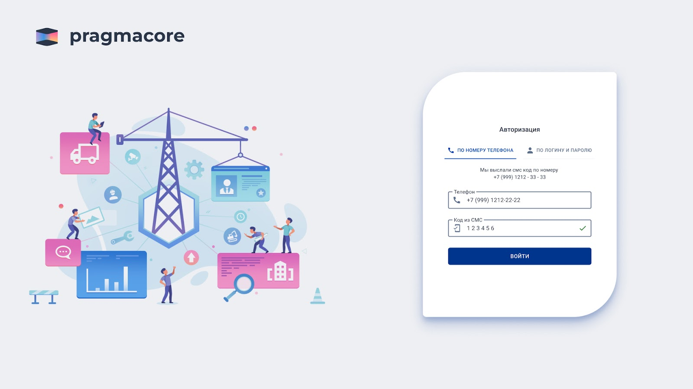
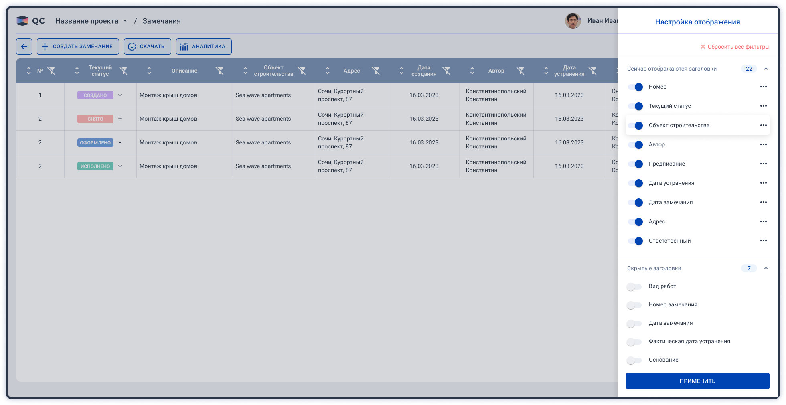

UX/UI Designer · Seven Winds Studio
Pragmacore
B2B SaaS для строительства

Задача
Связать работу заказчика, подрядчиков, инженеров и кадровиков в общих процессах. Изменения данных и статусов в одном модуле должны оставаться понятными для участников других.
Моя работа
Проектировал UX/UI строительного контроля, комплектации, WorkForce и финансовых интерфейсов. Проработал права доступа, сложные таблицы, импорт Excel, зависимые статусы и состояния для разработки.
Таблицы под роль и задачу
В строительном контроле предусмотрел настройку столбцов, фильтры, историю изменений и работу с длинными значениями. Пользователь выбирает данные, которые нужны для его текущей задачи.

Импорт с разбором ошибок
Разделил ошибку файла и ошибки отдельных записей. Пользователь видит проблемные строки и поля, исправляет данные и повторяет загрузку. Перед заменой совпавших объектов интерфейс предупреждает о последствиях.
Связанные статусы
При закрытии предписания интерфейс уточняет, нужно ли одновременно завершить связанные замечания. Так пользователь понимает последствия массового действия до подтверждения.
Процессы между модулями
Проработал продолжение сценариев после ошибки, при неполных данных и ограниченных правах.
Комплектация
Потребность, контрактация, отгрузка, склад и выдача материалов. Для частичных операций — история итераций и выбор партии.
WorkForce
Web- и mobile-сценарии отклика, профиля, документов и выхода на объект. Состояния зависят от этапа трудоустройства.
Финансы
Плановые и фактические показатели, отклонения и детализация по периодам и статьям.
Награды проекта
Pragmacore получила две отраслевые награды в 2023 году.
RUWARD AWARD
Серебро в номинации «Кейс года», направление «Digital-интеграция».
Workspace Digital Awards
2-е место в категории «IT-технологии и онлайн-сервисы».